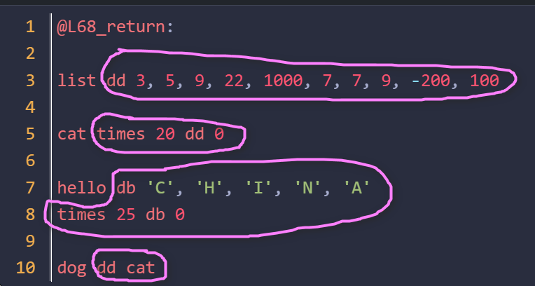

第26天：汇编器的语法分析之产生式
第26天：汇编器的语法分析之产生式
回顾 csub 的语法分析，最重要的工作是构造产生式。
本文就带着您一步一步构造汇编器的产生式。
汇编代码中的换行
在汇编语言中，换行（newline）本身通常没有语义含义，它主要起到分隔语句的作用，类似于高级语言中的分号;
C语言中，可以把多个语句写在一行，但是汇编语言不行。例如
1 | |
所以，一条指令的末尾，必须要有换行，有多个换行也可以。
对于数据定义，如果有多个 db/dw/dd ，也要分行写
1 | |
对于标号，可以没有换行，也可以有一个到多个换行。
1 | |
EBNF
之前我们定义 csub 的文法，用的是教科书式 CFG 写法
这里为大家介绍一种新的写法：EBNF（Extended Backus-Naur Form，扩展巴科斯-诺尔范式） 是 BNF（Backus-Naur Form） 的增强版本，用于更简洁、清晰地描述上下文无关文法（Context-Free Grammar, CFG），广泛应用于编程语言规范、协议定义和编译器设计中。
EBNF 引入了语法糖（syntactic sugar），让文法更简洁、易读、易写，而传统写法严格依赖递归和选择，形式更基础但冗长。
区别如下表
| 特性 | 传统产生式（纯 BNF / CFG） | EBNF |
|---|---|---|
| 0 或多次 | 需递归定义： XList → ε | X XList | 直接写： { X } |
| 可选（0 或 1 次） | 需额外规则： OptX → ε | X | 直接写：[ X ] |
| 分组 | 无法显式分组，靠规则拆分 | 用 ( ) 明确优先级 |
| 1 或多次 | XPlus → X | X XPlus | X {X} 或 X+ |
| 可读性 | 冗长，嵌套深 | 简洁，接近自然语言 |
| 工具支持 | 所有 parser 支持 | 需 EBNF-aware 工具（如 ANTLR） |
举个例子：如果用非终结符 <0orMoreNL> 表示 0 个或多个换行，nl 表示终结符换行(newline)
0 个或多个换行，用教科书式 CFG 写法：
1 | |
用 EBNF 写法：
1 | |
{} 表示零次或多次
如果用非终结符 <1orMoreNL> 表示 1 个或多个换行，<1orMoreNL> 的产生式是：
用教科书式 CFG 写法：
1 | |
用 EBNF 写法:
1 | |
可以看到，EBNF 写法更简洁，也更容易理解。后文中若采用 EBNF 写法，我们用“::=” 代替 ->，以和教科书式 CFG 写法区分开。
起始符号
如果起始符号叫 <ass_program>，该怎么分解呢？
汇编代码肯定不是一大疙瘩，是一条一条的。
如果用 <segment> 表示代码片段，那么 <ass_program> 可以推导出 0 个或多个 <segment>
1 | |
<segment> 可以分成 2 大类，一个是声明(包括定义)，一个是指令。
1 | |
<decl> 表示一条声明
<ass_inst> 表示一条指令
声明
下面的代码包括了各种声明。
1 | |
如果把指令以外的语法单元都当作声明，那么声明可以分为以下记类：
1、section .data； section .text 等对段的声明；
2、global xxxx 对全局符号的声明；
3、extern xxx 对外部符号的声明；
4、第 8 行的 test, 第 13 行的 @L68_return 等标号，也可以当成声明。标号本质上是符号的定义（symbol definition），它向汇编器声明“此处有一个可被引用的地址”；
5、第 3 行，定义了 list,它后面有一大串东西
对于 1~3，规律是 section/global/extern 然后跟着标识符，再跟着一个或者多个换行；
对于 4，规律是标识符后面跟着冒号；
对于 5，有点麻烦，不过也是以标识符开头。
所以，<decl> 可以分解为
1 | |
KW_SEC 表示终结符 section
KW_GLB 表示终结符 global
KW_EXT 表示终结符 extern
ASS_ID 表示标识符，也属于终结符
<1orMoreNL> 是前面讲过的 1 个或多个换行
第 4 行，就是情况 4 和 5，以标识符开头，后面的冒号或者一串东西用<decl_tail>表示
下面，我们把注意力放在产生式 <decl> -> ASS_ID <decl_tail>上，看看 <decl_tail> 如何分解
1 | |
这些声明确实都以 ASS_ID（标识符） 开头，但是后面跟着什么不能一概而论。
第 1 行，标识符后面是冒号
第 3 行，标识符后面是 dd，然后是一串数字
第 5 行，标识符后面是 times 20, 然后是 dd 和一串数字
times是 NASM 汇编器中的一个重复伪指令，用于将一段代码或数据重复指定的次数。它主要用于初始化重复的数据模式或重复生成相同的指令序列。
回忆一下，在把中间代码翻译成汇编代码的时候，在数据段的生成上，如果数组没有指定初始化值，或者提供的初始化值的个数少于数组元素个数，我们会使用times xx dd 0或者times xx db 0来填充。
看来times xx不是必须有的。
我先把 <decl_tail> 拆成 2 大类
1 | |
COLON 是终结符冒号，前文说过，它的后面可以有 0 或多个换行
<init_value> 表示标识符后面的那一大串，例如下图用粉色笔迹圈出来的，分别是每个标识符的 <init_value>

其实 <init_value> 还可以有更复杂的写法，例如：
1 | |
以上代码的意思是，定义了一个数组，名字叫 hello，它的初始值是这样的：最开始 5 个字节是 ‘C’, ‘H’, ‘I’, ‘N’, ‘A’，然后是连续 25 字节的 0，再然后是 8 个字节： ‘G’, ‘R’, ‘E’, ‘A’, ‘T’，1，2，3，最后是连续 8 字节的 0；
注意，每一行的末尾都要有 <1orMoreNL>
如果把每一行的初始化值看成是一个 <item>，那么 <init_value> 可以分解为
1 | |
或者用 EBNF 写法：
1 | |
也就是说，<init_value> 有一个或多个 <item> 组成
<item> 如何分解呢？
前文说过，“times xx” 的意思是重复多少次，且不是必须的。我们可以构造出
1 | |
KW_TIMES 表示终结符 times
NUM 表示终结符十进制整数（前面不能有负号）
<item> 可以包含 <rept>，也可以不包含
1 | |
[] 表示 0 或 1 次
<values> 如何分解呢？它的开头一定是 db、dd 这类数据定义伪指令（data definition directives）
1 | |
KW_DB,KW_DW,KW_DD 分别表示终结符 db,dw,dd
1 | |
COMMA 表示终结符逗号
<value_list> 可以推导出 <value>，后面可以跟着 0 次或多次 “COMMA <value>”
1 | |
<value> 可以是数字，字符串，标识符。如果是数字，也可能带负号/正号。
至此，声明的产生式就构造完成了，下面看指令的产生式如何构造。
指令
指令的构造比较简单，从操作数上分，有双操作数指令，单操作数指令和无操作数指令。
用 <ass_inst> 表示一条指令，用 <oprand> 表示操作数；
<double_op> <single_op> <none_op> 分别表示带有双操作数的指令助记符，带有单操作数的指令助记符，不带操作数的指令助记符。
1 | |
1 | |
以上是我们用到的指令助记符。
操作数 <oprand> 如何分解呢？
操作数可以是数字（前面可以有正负号）、标识符、寄存器的名字，还可以是用方括号包裹起来的内存操作数
1 | |
<mem> 表示内存操作数；
不熟悉汇编语言的同学，我帮你补一补课：
1 | |
[0x1234] 就是一个内存操作数；
注意，[] 前面可能有 byte、word、dword 等用于显式指定操作数大小的“操作数大小前缀”（operand-size specifier）。它们告诉汇编器：“我要对多少字节的数据进行操作”。
例如上面第 2 行，表示把一个字节且值为 0x88 存储到 ebx 指向的内存。
1 | |
ASS_LBRACKET 和 ASS_RBRACKET 分别表示终结符 “[” 和 “]”
“[” 和 “]” 是内存操作数的特征。
<addr> 是什么呢？这取决于 x86-32 位 cpu 的寻址方式。
x86-32 寻址方式如下表：
| 序号 | 类型 | 形式 | 示例 |
|---|---|---|---|
| 1 | 立即数 | imm |
mov eax, 10 |
| 2 | 寄存器 | reg |
mov eax, ebx |
| 3 | 直接/绝对地址 | [addr] |
mov eax, [my_var] |
| 4 | 寄存器间接 | [reg] |
mov eax, [esi] |
| 5 | 基址+位移 | [base + disp] |
mov eax, [ebp + 8] |
| 6 | 变址+比例+位移 | [index*scale + disp] |
mov eax, [edi*4 + table] |
| 7 | 基址+变址+比例+位移 | [base + index*scale + disp] |
mov eax, [ebx + esi*4 + 16] |
我们生成的汇编代码只用到了前 5 种，1 和 2 不需要访问内存，3、4、5 需要访问内存；
序号 3 的例子中，my_var 是一个标识符，它的本质是一个地址，和 mov eax, [0x1234] 没有区别；
根据序号 3-5，我们可以构造如下产生式；
1 | |
也就是说，方括号里面可以是具体的数字，也可以是标识符，还可以是寄存器名字，寄存器名字后面还可以带一个偏移，偏移可正可负。
如果是下面这样的 c 代码
1 | |
翻译成汇编后：
1 | |
第 11 行的方括号里面是 list + 数字
所以 <addr> 还需要再修改一下
1 | |
另外，下面两行我们也不考虑。
1 | |
至此，产生式构造完毕。我们可以根据产生式做语法分析了。